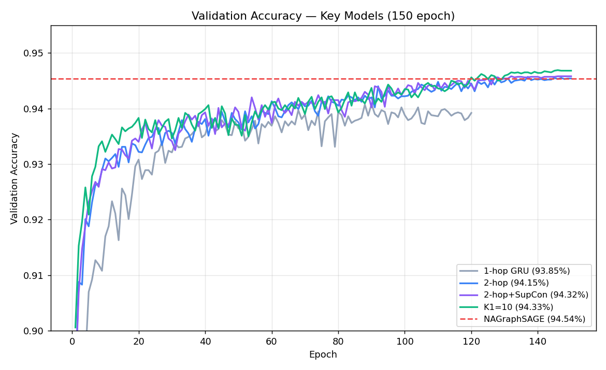
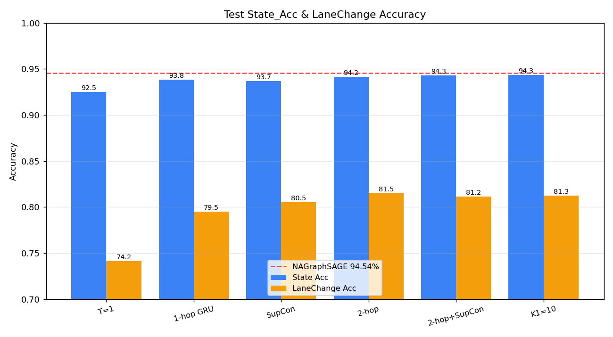
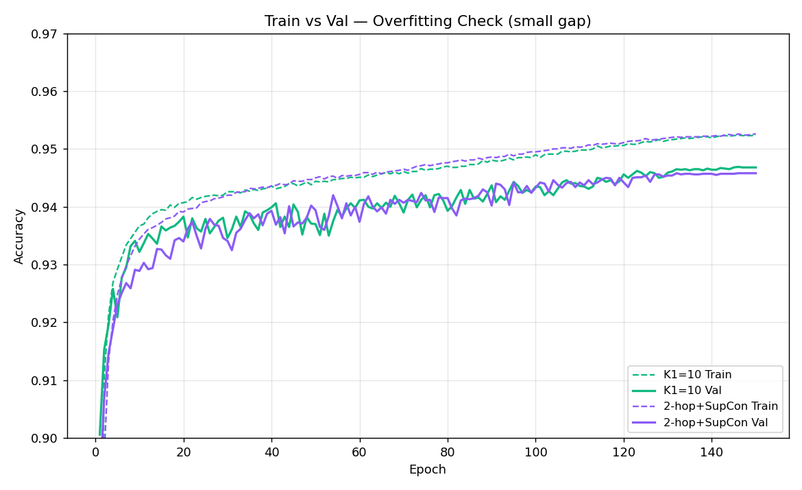

Temporal Edge Feature Encoding in Graph Neural Networks
for Vehicle Movement State Classification
NAGraphSAGE (IEEE_TII_25_9364) 직접 후속. 핵심 novelty는 Edge feature 시계열 인코딩 — 기존 시공간 GNN이 다루지 않은 kinematic 이웃 관계의 시간적 변화를 학습. 과거 T프레임의 노드·엣지 시계열을 입력으로 받아 현재 시점 t의 차량 상태(Stop / Lane Change / Normal Driving)를 분류한다. 미래 예측 헤드·고정 97% 목표를 제거하고, State_Acc 유의미한 향상 하나에 집중한다.
연구 개요
과거 T프레임의 노드·엣지 시계열을 입력으로 받아 현재 시점 t의 차량 상태(Stop / Lane Change / Normal Driving)를 분류하고, 이 정확도를 NAGraphSAGE(94.54%) 대비 통계적으로 유의미하게 높이는 것이 목표다.
미래 예측(t+1, t+2...), Lead Time 등은 이 목표와 직접 연관이 없어 제거했다.
"The current framework operates on independently constructed per-frame graphs. This design emphasizes instantaneous situational awareness rather than long-term sequential dependencies. [...] Future work will incorporate spatio-temporal graph architectures and heterogeneous node modeling to jointly address movement status classification and trajectory prediction."
→ "spatio-temporal graph architectures"의 구현이 ET-NAGraphSAGE. 논문 저자가 열어둔 문을 가장 직접적으로 구현한다.
Gongeoptap World EdgeDim3
(Table VI ±0.28)
Gongeoptap World
(Table XI ±1.03)
통계적으로 유의미한 향상
4 seed 평균 기준
Edge feature 시계열
기존 GNN에 없음
제거된 것과 이유
무엇을 빼고 왜 뺐는지 명확히 기록한다.
✕ Dual-Head (미래 K스텝 예측)
- State_Acc와 직접 연관 없음
- Multi-task loss가 분류를 방해할 수 있음 (M2MambaV2 경험)
- "뭐가 Acc를 올렸나" 인과 분리 어려워짐
- 논문 주장이 "분류+예측" 두 방향으로 희석
→ 별도 future work 또는 다음 논문으로
✕ Mamba = 핵심 Contribution
- T=10~15에서 GRU와 실질 차이 이론적 불명확
- Ablation에서 GRU ≥ Mamba면 논문이 흔들림
- 인코더 타입은 ablation으로 결정, 논문은 결과에 종속되지 않아야 함
→ Ablation A에서 비교 후 최적 선택
✕ 고정 목표 97%
- Gongeoptap 원형교차로의 구조적 난이도
- 97%는 DRIFT A/B 수준 — Gongeoptap에서 달성 보장 불가
- 논문은 "유의미한 향상"으로 주장하면 충분
→ 4 seed avg ± std로 비교
핵심 Novelty — 무엇이 진짜 새로운가
| 기존 방법 | Edge 처리 | Attention 소스 | ET-NAGraphSAGE 차별점 |
|---|---|---|---|
| STGCN, DCRNN | 거리/연결 여부 (균일) | 없음 |
① E_{ij}^{1..T} → TemporalEncoder → e_{ij}^temp kinematic 관계 이력 압축 ② α_{ij} = sigmoid(W·e_{ij}^temp) 이력 전체가 gate를 결정 ③ h̃_j = α_{ij} · h_j^temp 이웃 표현을 동적으로 변조 ④ m = ReLU(Linear(cat(h̃_j, e_{ij}^temp))) gate 소스가 message에도 직접 참여 T프레임 이력 기반 dynamic gate — GAT/EGAT와 구조적 차별 |
| GAT | 없음 (node 쌍 attention) | 현재 노드 피처 쌍 | |
| EGAT | 현재 프레임 1개 → scalar | 현재 edge 1개 | |
| Liu et al. [18] (GraphSAGE-ST) | node만 시계열, edge 거리 고정 | 없음 | |
| NAGraphSAGE | 현재 프레임 독립 MLP | 없음 |
Novelty 강도 평가
C1 — Edge Temporal Sequence-Guided Dynamic Attention ★ 핵심
T프레임 kinematic 관계 이력 e_{ij}^temp → vector gate α_{ij} ∈ ℝ^d → h̃_j = α_{ij} ⊙ h_j^temp (차원별 선택적 변조).
GAT·EGAT는 현재 프레임 1개 → scalar α ∈ ℝ¹. 본 연구는 T프레임 이력 전체 → d차원 vector gate로 구조 자체가 다르다.
ITS 차량 상태 분류에서 kinematic edge 시계열 기반 동적 vector 어텐션은 최초.
C2 — Node 시계열 인코딩
과거 T프레임 node feature(위치·속도·가속도·방향) 시계열로 BBox 노이즈 억제 + 행동 패턴 학습. Edge 시계열과 함께 쓸 때 상승효과.
중간 — 조합이 새로움C3 — Temporal Edge-Weighted Aggregation ★
β_{ij} = softmax_j(w^T · e_{ij}^temp) ∈ ℝ¹
T프레임 kinematic 이력이 집계 비중(β)을 결정. NAGraphSAGE의 균등 Add를 대체.
GAT/EGAT는 현재 프레임 → scalar softmax. β는 T프레임 이력 → temporal-aware 이웃 집계.
α(내용 변조, C1)와 β(집계 가중, C3)는 역할이 직교 — 동일 소스(e_{ij}^temp)에서 이중 출력.
기존 연구 분석 — NAGraphSAGE
✅ 유지할 강점
Edge-Aware Message Passing
각 kinematic attribute를 독립 MLP로 투영 후 연결 — 다차원 의미 보존. ET-NAGraphSAGE에서 그대로 계승.
KL 정규화 손실
Lane Change 소수 클래스 대응. attention score를 균등 분포로 유도. λ_KL ∈ [0.1, 0.5] 범위 유지.
Add Aggregator
Mean/Max보다 표현력 강함 (논문 Table VIII 실증). 차선변경 시 이웃 전체 반응이 신호.
데이터셋 기반
Gongeoptap(원형교차로) + DRIFT 6개 도로. 동일 split 조건(70/15/15)으로 공정 비교.
⚠️ ET-NAGraphSAGE가 해결할 한계
| 한계 | 현상 | ET-NAGraphSAGE 해결 |
|---|---|---|
| BBox 지터 취약 | YOLOv9 단일 프레임 오탐 → speed/accel 피처 오염 | T프레임 시퀀스 평활화 효과 → 노이즈 억제 |
| Lane Change 경계 오분류 | 전환 직전·직후 프레임이 Normal로 오분류 | T프레임 이전 방향·가속 변화 패턴 학습 |
| Edge 관계 단절 | 이웃 pair의 kinematic 관계 변화 미학습 | Edge 시계열 인코딩 — 핵심 contribution |
📊 비교 기준선 수치
| 모델 | Acc (%) | Macro-F1 (%) | Macro-P (%) | Macro-R (%) |
|---|---|---|---|---|
| GraphSAGE | 92.74±0.42 | 90.69±0.52 | 92.00±0.53 | 89.85±0.51 |
| GT | 92.76±0.57 | 90.76±0.76 | 91.84±0.62 | 90.02±0.82 |
| EGT | 93.12±0.12 | 91.31±0.16 | 91.98±0.15 | 90.75±0.04 |
| GRIT | 93.12±0.07 | 91.31±0.06 | 92.04±0.16 | 90.75±0.54 |
| NAGraphSAGE (World, EdgeDim3) | 94.07±0.28 | 92.56±0.37 | 93.03±0.32 | 92.17±0.42 |
| ET-NAGraphSAGE (목표) | > 94.07 (유의) | > 92.56 | — | — |
제안 방법론 — 연구 기여점
ET-NAGraphSAGE의 3가지 구조적 기여 — 모두 e_{ij}^temp(이웃 차량과의 과거 T프레임 운동 관계를 하나의 벡터로 압축한 것)에서 파생된다.
Edge Temporal
Dynamic Vector Gate
쉽게 말하면: "이웃 차량과 최근 T프레임 동안 어떤 관계였나?"를 학습해서, 그 이력이 이웃의 표현을 차원마다 다르게 조절한다.
e_{ij}^temp = TemporalEnc(E_{ij}^{t-T+1..t})
α_{ij} = sigmoid(W_α · e_{ij}^temp) ∈ ℝ^d
h̃_j = α_{ij} ⊙ h_j^temp
T프레임 kinematic 관계 이력 → d차원 vector gate α → 이웃 표현을 차원별로 변조.
GAT·EGAT는 현재 프레임 1개 → scalar(ℝ¹). 본 연구는 T프레임 이력 → vector(ℝ^d).
Node + Edge
시계열 통합 인코딩
쉽게 말하면: 내 차량(노드)과 이웃 관계(엣지) 둘 다 과거 흐름을 보고, 그 시계열 정보를 그래프 메시지에 함께 담는다.
h_i^temp = NodeEnc(X_i^{t-T+1..t}) ∈ ℝ^d
e_{ij}^temp = EdgeEnc(E_{ij}^{t-T+1..t}) ∈ ℝ^{d_e}
m_{ij} = ReLU(Linear(cat(h̃_j, e_{ij}^temp)))
노드 시계열(BBox 노이즈 억제·행동 패턴) + 엣지 시계열(kinematic 관계 이력)을 NAGraphSAGE의 Edge-Aware 메시지에 통합.
STGCN·DCRNN은 엣지를 고정 거리로만 처리 — 시계열 엣지 인코딩은 최초.
Temporal Edge-Weighted
Aggregation
쉽게 말하면: 과거에 더 밀접하게 상호작용한 이웃 차량의 정보를 더 많이 반영해서 합산한다. 모든 이웃을 똑같이 더하지 않는다.
β_{ij} = softmax_j(w_β^T · e_{ij}^temp) ∈ ℝ¹
h_N(v) = Σ_j β_{ij} · m_{ij}
T프레임 kinematic 이력 → 이웃별 집계 가중치 β (Σ_j β_{ij}=1). NAGraphSAGE의 균등 Add 대체.
α(차원별 내용 변조, C1)와 β(이웃별 집계 비중, C3)는 역할이 직교하며 동일 소스에서 파생.
① α — 이웃 표현 필터링 어떤 운동 정보를 살릴지 차원마다 결정 (vector gate, C1)
② message — 이웃 정보 합성 필터링된 이웃 표현 + 관계 이력을 하나의 메시지로 (C2)
③ β — 이웃 집계 비중 과거 상호작용이 강한 이웃을 더 반영 (temporal softmax, C3)
제안 방법론 — ET-NAGraphSAGE
Temporal Encoder (Node + Edge) → Edge-Guided Attention → Temporal Edge-Weighted Aggregation → 단일 분류 헤드.
🏗️ 4.1 전체 아키텍처
NAGraphSAGE (기존):
h_e = MLP_각속성(e_{ij,t}) ← 현재 프레임 1개, 속성별 독립 투영
m = ReLU(Linear(cat(x_j, h_e))) ← Add Aggregator (균등 합산)
ET-NAGraphSAGE (제안):
e_{ij}^temp = TemporalEncoder(E_{ij}^{t-T+1..t}) ← T프레임 kinematic 관계 압축
① Vector Gate (C1 ★)
α_{ij} = sigmoid(W_α · e_{ij}^temp) ∈ ℝ^d ← 차원별 선택적 변조
h̃_j = α_{ij} ⊙ h_j^temp ← "어떤 차원을 살릴 것인가?"
② Message 구성
m_{ij} = ReLU(Linear(cat(h̃_j, e_{ij}^temp)))
③ Temporal Edge-Weighted Aggregation (C3 ★)
β_{ij} = softmax_j(w_β^T · e_{ij}^temp) ∈ ℝ¹ ← "어느 이웃을 더 들을 것인가?"
h_N(v) = Σ_j β_{ij} · m_{ij} ← 시간 이력 기반 이웃 중요도 가중 합산
핵심 대비: α는 메시지 내용(차원별), β는 집계 비중(이웃별). 두 역할은 직교적이며 모두 e_{ij}^temp에서 파생.
GAT·EGAT의 scalar attention은 현재 프레임 1개가 소스 — β는 T프레임 kinematic 이력이 이웃 집계 비중을 결정한다.
| 모델 | 소스 (시간) | 메시지 변조 | 집계 가중 |
|---|---|---|---|
| GAT | 현재 노드 쌍 (1프레임) | 없음 | scalar α ∈ ℝ¹ (softmax) |
| EGAT | 현재 edge (1프레임) | 없음 | scalar α ∈ ℝ¹ (softmax) |
| NAGraphSAGE | 현재 edge (1프레임) | MLP → concat | 균등 Add (없음) |
| ET-NAGraphSAGE | T프레임 kinematic 이력 | α ∈ ℝ^d (vector gate) | β ∈ ℝ¹ (temporal softmax) |
⏱️ 4.2 시계열 인코더 선택
| 인코더 | 복잡도 (T=10) | 장점 | 단점 | 역할 |
|---|---|---|---|---|
| GRU | O(T·d²) | 단순, 안정적, 검증됨 | 선택적 집중 없음 | 강한 baseline |
| LSTM | O(T·d²) | 더 복잡한 게이팅 | GRU보다 파라미터 많음 | GRU 상위 비교군 |
| Mamba | O(T·d) | 선택적 Δ, 행동 전환 포착 | T짧아 이점 불명확 | 후보 (ablation 결정) |
| Transformer | O(T²·d) | 전역 attention | T짧아 이점 없음 | 비교군만 |
🎨 4.3 다이어그램 프롬프트 (Gemini용)
① 전체 아키텍처 다이어그램 프롬프트
Draw a clean, publication-quality neural network architecture diagram for ET-NAGraphSAGE.
Layout: top-to-bottom. White background. Minimal text — use math notation only, no long sentences.
──────────────────────────────────────────
TOP — INPUT (two parallel streams)
──────────────────────────────────────────
LEFT stream (blue):
Title: "Node Sequence"
Stack of T=4 horizontal bars (light blue rectangles), top-to-bottom:
x_t [6]
x_{t-1} [6]
⋮
x_{t-T+1} [6]
Small icon left: ego vehicle surrounded by K neighbor vehicles
RIGHT stream (red-orange, thicker border):
Title: "Edge Sequence ★ Core Novelty"
Stack of T=4 horizontal bars (light red):
e_{ij,t} [5]
e_{ij,t-1} [5]
⋮
e_{ij,t-T+1} [5]
Small label top-right: "per neighbor pair (i,j)"
Label between streams: "T frames"
──────────────────────────────────────────
STAGE 1 — TEMPORAL ENCODER (dark navy panel)
──────────────────────────────────────────
Label top-left: "① Temporal Encoder"
LEFT box (blue, rounded):
"Node Encoder"
sub: "GRU / LSTM / Mamba"
Output arrow → h_i^temp ∈ ℝ^d
RIGHT box (red-orange, rounded, star icon ★):
"Edge Encoder"
sub: "GRU / LSTM / Mamba"
Output arrow → e_{ij}^temp ∈ ℝ^{d_e}
Small note between boxes: "independent per (i,j)"
──────────────────────────────────────────
STAGE 2 — SPATIAL AGGREGATION (light gray panel)
──────────────────────────────────────────
Label top-left: "② NAGraphSAGE Layer × L"
Show mini graph: center node (ego) + 4 surrounding nodes (neighbors),
edges labeled e_{ij}^temp
Three sequential boxes with arrows:
[A] α_{ij} = σ(W_α · e_{ij}^temp) ∈ ℝ^d, h̃_j = α_{ij} ⊙ h_j^temp, m_{ij} = ReLU(Linear(cat(h̃_j, e_{ij}^temp)))
Label above box: "① Edge-Guided Vector Gate ★" (red-orange border, thicker)
[B] β_{ij} = softmax_j(w^T · e_{ij}^temp), h_N = Σ_j β_{ij} · m_{ij}
Label above box: "② Temporal Edge-Weighted Aggregation ★" (amber/orange border, thicker)
[C] cat(h_i^temp, h_N) → Linear → ReLU → z_i ∈ ℝ^h
──────────────────────────────────────────
STAGE 3 — OUTPUT (white, bottom)
──────────────────────────────────────────
Label: "③ Classifier"
Single box: "Linear + Softmax"
Three output nodes (colored dots + labels):
● Stop ● Lane Change ● Normal Driving
──────────────────────────────────────────
BOTTOM-RIGHT — small annotation box
──────────────────────────────────────────
ℒ_total = ℒ_Focal + λ_KL · ℒ_KL
(two lines only, no further explanation)
──────────────────────────────────────────
LEGEND (bottom-left, 3 items)
──────────────────────────────────────────
■ Blue = Node
■ Red = Edge (★ Core Novelty)
■ Gray = Spatial aggregation
Style: academic paper quality, sans-serif font, arrows thick with arrowheads,
stage panels have subtle rounded-corner borders, no decorative elements.
② 시계열 인코더 상세 다이어그램 프롬프트
Draw a detailed diagram of the Temporal Encoder in ET-NAGraphSAGE.
Layout: two columns side by side. White background. Minimal text — math notation only.
──────────────────────────────────────────
LEFT COLUMN — Node Temporal Encoder (blue theme)
──────────────────────────────────────────
Header: "Node Temporal Encoder" (bold, blue background)
Bottom-to-top input sequence (5 vectors, equally spaced):
x_{t-4} [6] → x_{t-3} [6] → x_{t-2} [6] → x_{t-1} [6] → x_t [6]
(small rectangles, light blue fill)
Below first rectangle only: "pos_x pos_z speed dir_x dir_z accel"
GRU chain above (left-to-right, 5 cells, blue fill):
Each cell: rounded square labeled "GRU"
Horizontal arrows between cells (hidden state flow): h_{t-4} → h_{t-3} → ... → h_t
Vertical arrows from each x input up into corresponding GRU cell
Final output arrow right from h_t:
h_i^temp ∈ ℝ^d
Small note below column (2 lines max):
"Ego vehicle's T-frame kinematic history"
──────────────────────────────────────────
CENTER — comparison box
──────────────────────────────────────────
Small bordered box between the two columns:
NAGraphSAGE: e_{ij,t} (1 frame)
ET-NAGraphSAGE: e_{ij, t-T+1..t} (T frames) ★
──────────────────────────────────────────
RIGHT COLUMN — Edge Temporal Encoder (red-orange theme, ★)
──────────────────────────────────────────
Header: "Edge Temporal Encoder ★" (bold, red-orange background)
Top-right corner: two small vehicle icons (ego i, neighbor j) with double arrow between them
label: "kinematic relationship"
Bottom-to-top input sequence (5 vectors):
e_{ij,t-4} [5] → e_{ij,t-3} [5] → ... → e_{ij,t} [5]
(small rectangles, light red fill)
Below first rectangle only: "rel_speed rel_accel rel_dir_x rel_dir_z dist"
GRU* chain above (5 cells, red-orange fill):
Each cell: rounded square labeled "GRU*"
(* = separate weights from Node encoder, shown as footnote)
Horizontal hidden-state arrows, vertical input arrows (same layout as left)
Final output arrow right from last cell:
e_{ij}^temp ∈ ℝ^{d_e}
Small note below column (2 lines max):
"Pairwise kinematic relationship over T frames"
──────────────────────────────────────────
BOTTOM — Zero Padding strip (full width)
──────────────────────────────────────────
Title: "Zero Padding"
Timeline bar with T slots (left=t, right=t-T+1):
Slots t, t-1, t-2: green fill + ✓ (neighbor present)
Slots t-3, t-4: gray fill + ✗ (neighbor absent → zero vector)
One-line caption: "Neighbor set fixed at frame t via KNN; missing frames → 0"
──────────────────────────────────────────
STYLE
──────────────────────────────────────────
- Academic paper quality, sans-serif font
- All math in italic
- Blue column slightly less prominent than red-orange (edge = core novelty)
- GRU cell size: ~40×40px equivalent, clearly labeled
- No background textures, no shadows
- Small footnote bottom-center: "GRU shown as representative. Encoder type selected by Ablation A (GRU / LSTM / Mamba)."
📐 4.4 손실 함수
L_total = L_FL + λ_KL · L_KL L_FL = Focal Loss(ŷ_t, y_t; γ, α) ← LC 소수 클래스 직접 대응 (CE 대체) L_KL = KL(p_attention ∥ Uniform) ← attention 균등화 (NAGraphSAGE에서 유지) γ = 2, α_LC > α_Stop ≈ α_Normal (역빈도 기반 초기화) λ_KL ∈ [0.1, 0.5] ▶ Dual-Head L_future 제거: State_Acc 단일 목표에 집중. ▶ Focal Loss: Lane Change (205K) vs Stop (401K) 불균형 직접 해소.
실험 설계
🗄️ 5.1 데이터셋
| 데이터셋 | 도로 유형 | 인스턴스 | 클래스 분포 (S/LC/N) | 비고 |
|---|---|---|---|---|
| Gongeoptap | 원형교차로 (Ulsan) | 996,122 | 401K / 205K / 389K | Primary — 가장 어려운 사이트 |
| DRIFT A, B | T-교차로 | ~600K | 다양 | 일반화 검증 |
| DRIFT C | 직선도로 | ~350K | LC 2.6% 극소 | LC heterophily 극단 |
| DRIFT D, E, I | 교차로 3종 | ~700K | 다양 | 밀도 강건성 |
| Union | 전체 | ~3.6M | — | 단일 모델 일반화 |
📂 5.2 데이터 형태 및 로더 동작
CSV 원본 컬럼 구조
| 컬럼 | 타입 | 설명 | 로더 사용 여부 |
|---|---|---|---|
frame | int | 비디오 프레임 번호 (DRIFT: 6 단위, Gongeoptap: 1 단위) | 슬라이딩 윈도우 기준 |
object_id | int | 동일 추적 세션 내 차량 고유 ID (프레임 간 지속) | 궤적 연결 기준 |
position_x | float | World 좌표 X (m) | ✅ node_seq[0], KNN 이웃 탐색 |
position_y | float | 높이 (m) — 도로 면이 일정하여 변별력 없음 | ❌ 미사용 |
position_z | float | World 좌표 Z (m) | ✅ node_seq[1], KNN 이웃 탐색 |
speed | float | 순간 속도 (m/s) | ✅ node_seq[2], edge rel_speed |
direction_x | float | 진행 방향 벡터 X | ✅ node_seq[3], edge rel_dir_x |
direction_z | float | 진행 방향 벡터 Z | ✅ node_seq[4], edge rel_dir_z |
acceleration | float | 순간 가속도 (m/s²) | ✅ node_seq[5], edge rel_accel |
category | str | stop / lane_change / normal_driving | ✅ 레이블 (0/1/2) |
bbox_*, class, lane_id | — | BBox 픽셀좌표, 클래스, 차선 ID | ❌ 미사용 |
데이터셋별 프레임 특성
DRIFT
- 원본 30fps 비디오 → 매 6프레임 샘플 (5fps 유효)
frame값: 6, 12, 18, 24, … (6 단위 증가)frame_step = 6,max_gap = 12- T=10 → 실제 2초 커버 (10 × 0.2s)
Gongeoptap
- 연속 프레임 기록 (1fps 유효)
frame값: 1, 2, 3, 4, … (1 단위 증가)frame_step = 1,max_gap = 2- T=10 → 10프레임 연속 커버
- 원형교차로 밀도로 궤적 끊김 56% — max_gap으로 자동 필터
데이터로더 처리 흐름 (modules/data_manager.py)
엣지 피처 계산식
ego_node = [pos_x, pos_z, speed, dir_x, dir_z, accel] # [6]
nbr_node = [pos_x, pos_z, speed, dir_x, dir_z, accel] # [6]
edge_feat = [
nbr.speed - ego.speed, # rel_speed (양수 = 이웃이 더 빠름)
nbr.accel - ego.accel, # rel_accel (양수 = 이웃이 더 가속 중)
nbr.dir_x - ego.dir_x, # rel_dir_x (방향 차이 X성분)
nbr.dir_z - ego.dir_z, # rel_dir_z (방향 차이 Z성분)
sqrt((nbr.pos_x - ego.pos_x)²
+ (nbr.pos_z - ego.pos_z)²), # distance (m, 유클리드)
] # → [5]
고정 K 방식에서 반경(r) 기반 + K_max 상한 방식으로 변경.
근거: 논문 Table II — r=20m에서 Gongeoptap avg degree 5.7, 물리적 상호작용 거리로 정당화 가능.
고정 K는 리뷰어 "왜 K개냐" 공격에 취약. 반경은 교통 밀도에 따라 이웃 수가 자연스럽게 변동됨.
기본값: radius=20m, K_max=6 | Ablation E: radius∈{10,20,30}m × K_max∈{4,5,6}
출력 배치 텐서 형태 (batch_size=B)
| 키 | shape | 의미 |
|---|---|---|
node_seq | [B, T, 6] | ego 차량의 T프레임 노드 피처 |
nbr_node_seqs | [B, K, T, 6] | K 이웃의 T프레임 노드 피처 |
edge_seqs | [B, K, T, 5] | K 이웃과의 T프레임 kinematic 관계 |
nbr_mask | [B, K] | 실제 이웃 여부 (1=real, 0=padded) |
y | [B] | 레이블 (0=stop, 1=LC, 2=normal) |
meta | list[B] | object_id, frame, window_frames 등 디버깅 정보 |
🔬 5.3 Ablation 설계
(구 요약 카드 보기)
Group A — temporal encoder 타입
- A1: No temporal (= baseline T=1)
- A2: GRU
- A3: LSTM
- A4: Mamba
- A5: Transformer (비교군)
→ 최고 성능 인코더를 메인 논문에 채택
Group B — 시퀀스 길이 T
- B1: T=1 (baseline)
- B2: T=5 (1초 @ 5fps)
- B3: T=10 (2초) — 기본 실험
- B4: T=15 (3초)
Group C — 시계열 대상 + 게이트 ★ 핵심 Ablation
- C1: No temporal (= NAGraphSAGE 재현, 기준)
- C2: Node temporal only
- C3: Edge temporal only (no gate)
- C4: Node + Edge temporal (no gate, simple cat)
- C5: Node + Edge temporal + Edge-Guided Gate (전체 제안)
C3 vs C1: Edge 시계열 자체 기여
C4 vs C2: Edge 시계열 추가 효과
C5 vs C4: Edge-Guided Gate 독립 기여 ← 핵심 비교
Group D — 손실 함수 및 인코더 차원
- D1: Focal γ = 0(CE) / 1 / 2
- D2: λ_KL = 0.1 / 0.2 / 0.3 / 0.5
- D3: NAGraphSAGE 층수 L = 3 / 5
- D4: World vs Image 좌표
- D5: d_e (Edge encoder hidden) = 32 / 64 / 128
- D6: Gate 타입 — scalar α ∈ ℝ¹ vs vector α ∈ ℝ^d
- D7: Aggregator 비교 — Add / GAT-style (현재 프레임) / β-weighted (T프레임 이력)
D5 기준값: d_e=32 (NAGraphSAGE h_e=32와 동일, ablation 공정성 확보)
D6: scalar(ℝ¹)는 GAT와 동일 구조. vector(ℝ^d)는 차원별 독립 변조 → 표현력·차별성 모두 우위
D7: Add=기존, GAT-style β=현재 프레임 edge 기반, β-weighted=T프레임 e_{ij}^temp 기반 → 시계열 집계 기여 단독 측정
Group E — 이웃 탐색 파라미터 ★ 2026-06-28 추가
- E1: radius = 10m (밀집 이웃만)
- E2: radius = 20m (기본값 — Table II 근거)
- E3: radius = 30m (넓은 상호작용 범위)
- K_max = 4 / 5 / 6 (각 radius와 교차 실험)
논문 Table II·III 기반: r=20m이 Gongeoptap avg degree ≈ 5.7로 물리적 근거 strongest.
K_max는 텐서 shape 고정용 상한 — 반경 내 실제 이웃이 K_max보다 적으면 zero-pad.
기본 실험: radius=20m, K_max=6
📊 5.4 비교 모델
| 계층 | 모델 | 비교 목적 |
|---|---|---|
| Tier 1: 공간 전용 | ET-NAGraphSAGE (T=1) | 핵심 baseline — temporal 없는 버전 (NAGraphSAGE 재현) |
| Tier 1: 공간 전용 | GraphSAGE, EGT, GRIT | 공간 GNN 군 대표 (기존 논문 수치 재사용) |
| Tier 2: 시공간 GNN | DCRNN [9], DSTAGNN [11] | 기존 시공간 방법론 — edge 균일 처리 비교 |
| Tier 2: 시공간 GNN | Liu et al. [18] (GraphSAGE-ST) | GraphSAGE 기반 동적 시공간 — node만 시계열, edge 고정 |
| Tier 3: 본 연구 변형 | GRU/LSTM/Mamba-ET-NAGraphSAGE | Ablation A — 인코더 타입 비교 |
📐 5.5 평가 지표
| 지표 | 설명 | 중요성 |
|---|---|---|
| Accuracy (State_Acc) | 전체 정답률. 4 seed avg±std로 t-test 유의성 검증 | ★★★★★ 필수 |
| Macro-F1 | Lane Change 소수 클래스 반영. Acc와 함께 리포트 | ★★★★ 중요 |
| Macro-P / Macro-R | NAGraphSAGE 동일 기준 비교 | ★★★ 참고 |
| Inference FPS | 서버 / Jetson Orin. 실시간 요건 확인용 | ★★ 참고 |
Ablation Study 개요
각 Ablation은 한 요소만 바꿔 그 요소의 기여를 측정한다. 왼쪽 메뉴에서 그룹별 상세 페이지로 이동.
그룹 요약
| 그룹 | 변수 | 경우의 수 | 상태 | 핵심 결과 |
|---|---|---|---|---|
| A | Temporal Encoder | GRU / LSTM / Mamba / Transformer | 거의 완료 | GRU 최고 (93.85%) |
| B | 시퀀스 길이 T | 1 / 5 / 10 / 15 | 거의 완료 | T=10 최적 |
| C ★ | 시계열 대상 | node / edge / node+edge | 필수·진행예정 | node+edge만 완료 |
| D | 공간 구조 | 1-hop / 2-hop / K1,K2 / d_e | 주요 완료 | K1=10 최고 (94.33%) |
| E ★ | 이웃 선택 정책 | count / radius / hybrid | 필수·진행예정 | hybrid만 완료 |
★ = 논문 필수 (novelty·공정성 직접 증거). C·E는 코드 구현 완료(2026-07-01), 학교 서버에서 실행 예정.
Ablation A — Temporal Encoder 타입
경우의 수
| 옵션 | 설명 | Test Acc | 상태 |
|---|---|---|---|
| GRU | 게이트 순환망. 파라미터 적고 T=10에 충분 | 93.85% | 채택 |
| LSTM | 셀 상태 추가. GRU보다 파라미터↑ | 93.39% | 완료 |
| Mamba | SSM 기반. 장기 시퀀스 강점이나 T=10엔 과함, 과적합 | 93.23% | 완료(로컬 전용) |
| Transformer | self-attention. 비교군 | — | 미구현 |
temporal_encoder.py 미지원).실행 방법
--encoder_type [gru|lstm|mamba] --experiment et_nag_A_<enc>
⚠️ Mamba는 로컬 서버 전용 (mamba_ssm 컴파일 필요).
Ablation B — 시퀀스 길이 T
경우의 수
| 옵션 | 의미 | Test Acc | 상태 |
|---|---|---|---|
| T=1 | 단일 프레임 (시계열 없음, NAGraphSAGE 조건과 동일) | 92.51% | 완료 |
| T=5 | 1초 (@5fps) | — | 선택 |
| T=10 | 2초 — 기본값 | 93.85% | 최적 |
| T=15 | 3초 (샘플 585k로 감소) | 93.66% | 완료 |
실행 방법
--T [1|5|10|15] --experiment et_nag_B_T<n>
Ablation C — 시계열 대상 ★핵심
경우의 수
| 옵션 | node 시계열 | edge 시계열 | 의미 | 상태 |
|---|---|---|---|---|
| node-only | ✓ (T프레임) | ✗ (마지막 프레임만) | 엣지 시계열 제거 — 엣지 시계열 기여 격리 | 진행예정 (C-node) |
| edge-only | ✗ (마지막 프레임만) | ✓ (T프레임) | 노드 시계열 제거 — 노드 시계열 기여 격리 | 진행예정 (C-edge) |
| node+edge (제안) | ✓ | ✓ | 둘 다 시계열 — 제안 방법 | 완료 (기준 94.15%) |
구현 방식
et_nagraphsage.py의 temporal_target 파라미터로 제어. 비활성 스트림은 시퀀스를
마지막 프레임만 슬라이스(T=1)하여 시계열 동역학을 제거한다. 인코더 구조는 동일하게 유지되어
공정 비교가 된다.
실행 방법 (학교 서버)
python train.py --config configs/et_nagraphsage_2hop_base_ep500.yaml \
--temporal_target node --experiment C-node
# C-edge: edge-only
python train.py --config configs/et_nagraphsage_2hop_base_ep500.yaml \
--temporal_target edge --experiment C-edge
Ablation D — 공간 구조 & 모델 용량
hidden_dim)을 한 번도 안 키웠기 때문. 이것이 격차의 유력한 원인.D-1. hop / 이웃 수 (receptive field)
| 옵션 | Test Acc | 상태 |
|---|---|---|
| 1-hop | 93.85% | 완료 |
| 2-hop (K1=6, K2=4) | 94.15% | 완료 |
| 2-hop (K1=10, K2=6) | 94.33% | 최고 |
D-2. 엣지 인코더 차원 d_e
| 옵션 | Test Acc | 상태 |
|---|---|---|
| d_e=32 (기본) | 93.85% | 완료 |
| d_e=64 | 93.45% | 개선 없음 |
D-3. 채널 폭 hidden_dim (모델 용량) ★신규 — 학교 서버
NAGraphSAGE(1.25M)와 용량을 맞추는 축. hidden_dim=384이면 파라미터가 1.39M로 NAGraphSAGE급.
| 실험 ID | hidden_dim | 파라미터 수 | NAGraphSAGE 대비 | 우선 | 상태 |
|---|---|---|---|---|---|
D-h128 (기준) | 128 | 172,549 | 0.14× (7배 작음) | 기준 | 완료 94.33% |
D-h192 | 192 | 367,493 | 0.29× | ★★ | 대기 |
D-h256 | 256 | 636,165 | 0.51× | ★★ | 대기 |
D-h384 | 384 | 1,394,693 | 1.12× (동급) | ★★ | 대기 |
실행 방법 (학교 서버)
# D-3: 채널 폭 실험 (hidden_dim)
python train.py --config $CFG --hidden_dim 192 --experiment D-h192
python train.py --config $CFG --hidden_dim 256 --experiment D-h256
python train.py --config $CFG --hidden_dim 384 --experiment D-h384
# D-1: 이웃 수 (config로 조정)
python train.py --config configs/et_nagraphsage_2hop_k10.yaml
Ablation E — 이웃 선택 정책 ★
세 가지 정책 정의
| 정책 (mode) | 정의 | 관련 파라미터 | 특성 |
|---|---|---|---|
| count | 반경 무관, 최근접 K대 | K (radius 무시) | 항상 K대 확보 (멀어도 포함). NAGraphSAGE 최고기록 방식 |
| radius | 반경 r 내 전부 (K는 상한) | r (K는 cap) | 밀집도 반영, 개수 가변 |
| hybrid (현재) | 반경 r 내 최근접 K대 | r + K 둘 다 | 둘의 절충 — 현재 모든 실험이 이 방식 |
전체 실험 조합 (mode × r × K)
기준(굵게)은 hybrid/r=20/K1=6·K2=4 = 현재 94.15%. 각 조합은 한 줄 명령으로 실행 가능
(--neighbor_mode, --radius, --K_max, --K_max2).
count는 radius 무의미(—), radius는 K가 상한(cap)일 뿐.
| 실험 ID | mode | radius r | K1(K_max) | K2(K_max2) | 우선 | 목적 | 상태 |
|---|---|---|---|---|---|---|---|
E-base | hybrid | 20 | 6 | 4 | 기준 | 모든 조합의 비교 기준 (=현재 2-hop) | 완료 94.15% |
| ① 정책 비교 (r=20, K=6·4 고정) — ★핵심 | |||||||
E-count-K6 | count | — | 6 | 4 | ★★ | NAGraphSAGE 방식과 공정비교 (핵심) | 대기 |
E-radius-r20 | radius | 20 | (cap) | (cap) | ★★ | 반경 내 전부 집계 효과 | 대기 |
| ② 반경 민감도 (hybrid 고정, r 변화) | |||||||
E-hybrid-r10 | hybrid | 10 | 6 | 4 | ★ | 좁은 반경 (밀집 이웃만) | 대기 |
E-hybrid-r30 | hybrid | 30 | 6 | 4 | ★ | 넓은 반경 (원거리 상호작용) | 대기 |
| ③ count K 민감도 (count 고정, K 변화) | |||||||
E-count-K5 | count | — | 5 | 4 | ★ | NAGraphSAGE best(count 5) 재현 | 대기 |
E-count-K10 | count | — | 10 | 6 | ★ | count + 넓은 이웃 (D와 교차) | 대기 |
| ④ 반경 민감도 (radius 정책, r 변화) | |||||||
E-radius-r10 | radius | 10 | (cap) | (cap) | ☆ | 좁은 반경 전부 | 선택 |
E-radius-r30 | radius | 30 | (cap) | (cap) | ☆ | 넓은 반경 전부 | 선택 |
★★ 필수 · ★ 권장 · ☆ 여유 시. 총 9개 조합 (기준 포함). ①번 그룹(정책 비교)이 논문 핵심.
E-count-K6 결과가 E-base(hybrid)와 비슷하면 → 우리 성능이 이웃 정책이 아닌 아키텍처 덕분임이 입증돼 공정 비교 confound가 제거된다. 반대면 정책 영향을 논문에 명시. 반경/K 민감도(②③④)는 r=20·K=6 선택의 타당성 근거가 된다.구현 방식
data_manager.py의 neighbor_mode로 정책 제어.
count는 KD-tree query(k)로 최근접 K대, radius/hybrid는 query_ball_point(r) 후 처리.
r·K는 --radius / --K_max / --K_max2 CLI로 조합.
실행 방법 (학교 서버) — 조합 예시
# ① 정책 비교 (핵심)
python train.py --config $CFG --neighbor_mode count --experiment E-count-K6
python train.py --config $CFG --neighbor_mode radius --experiment E-radius-r20
# ② 반경 민감도
python train.py --config $CFG --neighbor_mode hybrid --radius 10 --experiment E-hybrid-r10
python train.py --config $CFG --neighbor_mode hybrid --radius 30 --experiment E-hybrid-r30
# ③ count K 민감도
python train.py --config $CFG --neighbor_mode count --K_max 5 --K_max2 4 --experiment E-count-K5
python train.py --config $CFG --neighbor_mode count --K_max 10 --K_max2 6 --experiment E-count-K10
연구 기여 및 차별성
C1. Edge Temporal Sequence-Guided Dynamic Attention ★ 핵심
e_{ij}^temp → α_{ij} = sigmoid(W_α · e_{ij}^temp) ∈ ℝ^d (vector gate)
h̃_j = α_{ij} ⊙ h_j^temp ← 차원별 선택적 변조. GAT·EGAT는 현재 프레임 1개 scalar; 본 연구는 T프레임 이력 → d차원 vector gate.
C2. Node + Edge 시계열 통합 인코딩 + NAGraphSAGE Edge-Aware 공간 집계 결합
C3. Temporal Edge-Weighted Aggregation ★
β_{ij} = softmax_j(w_β^T · e_{ij}^temp) ∈ ℝ¹ ← T프레임 kinematic 이력 → 이웃별 집계 비중
h_N(v) = Σ_j β_{ij} · m_{ij} ← NAGraphSAGE의 균등 Add Aggregator를 temporal-aware 가중 합산으로 대체.
α(내용 변조)와 β(집계 가중) 모두 e_{ij}^temp에서 파생 — 직교적 역할, 단일 소스에서 이중 출력.
| 항목 | GAT / EGAT | NAGraphSAGE | ET-NAGraphSAGE (제안) |
|---|---|---|---|
| Node 시간 | 없음 | 없음 | T프레임 시퀀스 → h_i^temp |
| Edge 시간 | 없음 | 없음 | T프레임 시퀀스 → e_{ij}^temp |
| 메시지 변조 (α) | scalar softmax (현재 프레임) | 없음 | vector gate α ∈ ℝ^d (T프레임 이력) ★ C1 |
| 집계 가중 (β) | scalar softmax (현재 프레임) | 없음 (균등 Add) | temporal scalar β ∈ ℝ¹ (T프레임 이력) ★ C3 |
| 손실 함수 | CE | CE + KL (실제 미적용) | Focal + KL (활성화) |
| 노이즈 내성 | 취약 | 취약 | 시계열 평활화로 억제 |
Q1. "STGCN/DCRNN과 뭐가 다른가?"
→ STGCN은 node만 시계열 처리, edge는 거리 기반 고정. ET-NAGraphSAGE는 kinematic edge 시퀀스가 동적 게이트를 생성한다.
Q2. "GAT/EGAT와 뭐가 다른가?"
→ GAT·EGAT는 현재 프레임 1개로 scalar 가중치 생성. ET-NAGraphSAGE는 T프레임 kinematic 이력 전체가 게이트를 결정한다. 구조적으로 다름.
Q3. "단순히 GRU 두 개 추가 아닌가?"
→ e_{ij}^temp는 단순 feature가 아니라 (① α 생성 → 차원별 변조, ② β 생성 → 이웃 집계 가중) 두 가지 구조적 역할을 수행한다. Ablation C5 vs C4(gate 독립 기여), D7(β vs Add vs GAT-style 비교)이 이를 증명한다.
Q4. "미래 예측 없이 contribution이 충분한가?"
→ State_Acc 향상 + 구조적으로 명확한 dynamic gate 메커니즘으로 충분. 미래 예측은 future work.
전체 일정
기준일: 2026-06-28 | 목표 제출: 2026-10월 | 저널: IEEE Access
/home/oem/TNA_research/)NAGraphSAGE 코드 분석 및 복사
✓ 슬라이딩 윈도우 데이터 로더 구현 완료 (temporal split 포함)
✓ 데이터로더 검증 완료 (DRIFT, Gongeoptap)
T=1 baseline 재현 (ET-NAGraphSAGE no-temporal 버전)
Edge temporal encoder (핵심 novelty)
Ablation A (인코더 타입) + Ablation C (node/edge/both) 우선 실험
비교 모델 (STGCN, DCRNN, DST-GraphSAGE) 실행
DRIFT 전체 데이터셋 일반화 실험
4 seed 재현성 + t-test 유의성 검증
코드 구조
/home/oem/TNA_research/ (ET-NAGraphSAGE 현재) · /home/oem/graph_vehicle_v1/ (NAGraphSAGE 원본, 수정 금지) · 데이터: /home/oem/data/TII_data//home/oem/TNA_research/ ├── models/ │ ├── nagraphsage_layer.py ← graph_vehicle_v1/convlayer_final.py 복사 │ ├── temporal_encoder.py ← GRU / LSTM / Mamba (공통 인터페이스) ★ 신규 │ └── et_nagraphsage.py ← 전체 통합 모델 ★ 신규 ├── modules/ │ ├── data_manager.py ← 슬라이딩 윈도우 + temporal split ✓ 완료 │ └── experiment_manager.py ← 학습/평가 루프 ├── scripts/ │ └── verify_dataloader.py ← 데이터로더 검증 스크립트 ✓ 완료 ├── configs/ │ ├── config_baseline.yaml ← T=1 (no temporal) │ ├── config_node_gru_t10.yaml ← Ablation C2: node only │ ├── config_edge_gru_t10.yaml ← Ablation C3: edge only │ ├── config_both_gru_t10.yaml ← Ablation C4: node+edge ← 제안 │ ├── config_both_lstm_t10.yaml │ ├── config_both_mamba_t10.yaml │ ├── config_both_best_t5.yaml │ └── config_both_best_t15.yaml ├── docs/ │ ├── ET-NAGraphSAGE.html ← 이 문서 │ └── IEEE_TII_25_9364_..._NAGraphSAGE.pdf ├── train.py └── eval.py
NAGraphSAGE 원본 참조 경로
| 파일 | 경로 | 용도 |
|---|---|---|
| 핵심 모델 | /home/oem/graph_vehicle_v1/proposed/models/model_node_final.py | ET-NAGraphSAGE 공간 모듈 베이스 |
| Conv Layer | /home/oem/graph_vehicle_v1/proposed/models/convlayer_final.py | nagraphsage_layer.py로 복사 |
| 학습 스크립트 | /home/oem/graph_vehicle_v1/proposed/train_proposed_node_final.py | train.py 참조 |
| Config (World) | /home/oem/graph_vehicle_v1/proposed/config_proposed_world.yaml | 하이퍼파라미터 기준 |
Mamba 기초 개념
상태방정식 → SSM → HiPPO → S4 → Mamba 학습 기록. 노트북: /home/oem/TNA_research/docs/ssm_study.ipynb
SSM: "과거의 입력들을 압축해서 현재를 판단하는 기계다. 표현은 상태방정식과 출력방정식으로 표현된다."
HiPPO: "A와 x(t) 값이 있는데 x(t)의 과거 정보들을 압축한 문맥정보를 A에 의해서 길거나 순차적인 정보 중 훨씬 과거의 기록들의 정보가 한번에 사라지지 않지만 옅은 값으로 표현되어 있어 장기적인 정보로 일부는 살아남는다."
SSM vs HiPPO 핵심 차이: "SSM은 A 행렬을 랜덤으로 값을 정하다 보니 전체 흐름(방향)이 이리저리 뭉개질 수 있다. 대신 HiPPO는 A 행렬을 수학적으로 틀을 만들어두고 기본 방향성을 평균적인 흐름으로 세부적인 조정을 하고 세부적인 내용이 근본이 되는 a₀을 흔들지 않는다. 이것이 하삼각 행렬 (Lower Triangular Matrix)로 보장된다."
📐 1. SSM (State Space Model)
연속 시간: ẋ(t) = A x(t) + B u(t) ← 상태 방정식 (x의 변화율)
y(t) = C x(t) + D u(t) ← 출력 방정식 (x를 y로 변환)
이산화 (ZOH): Ā = exp(ΔA), B̄ = (ΔA)⁻¹(exp(ΔA)−I)·ΔB
반복 공식: x_k = Ā x_{k-1} + B̄ u_k ← 이전 x로 다음 x 계산
y_k = C x_k
계산 흐름:
초기값: x₀ = 0
스텝 1: u₁ → x₁ = Ā·x₀ + B̄·u₁ → y₁ = C·x₁
스텝 2: u₂ → x₂ = Ā·x₁ + B̄·u₂ → y₂ = C·x₂
...
▶ Δ 크면: 현재 입력에 빠르게 반응 / Δ 작으면: 과거 상태 유지
| 요소 | 정체 | 시간에 따라 변하나? |
|---|---|---|
| u(t) | 내가 넣는 입력 데이터 | ✅ 매 스텝 |
| x(t) | 모델 내부의 압축된 맥락 벡터 (은닉 상태) | ✅ 매 스텝 업데이트 |
| y(t) | 모델이 뱉는 출력 | ✅ 매 스텝 |
| A, B, C | 모델의 가중치 | ❌ 학습 후 고정 |
🦛 2. HiPPO
| 일반 SSM | HiPPO | |
|---|---|---|
| A 초기값 | 랜덤 | 수학적으로 설계된 값 |
| A 학습 | 역전파로 업데이트 | 고정 또는 구조 유지 |
| 장기 기억 | 보장 없음 | 수학적으로 보장 |
| 구조 | 아무 형태 | 하삼각 행렬 |
HiPPO A 행렬 (HiPPO-LegS, N=4):
A = -[ 1 0 0 0 ] ← a₀: 전체 평균, 감쇠 -1 (천천히 잊음)
[ √3 2 0 0 ] ← a₁: 선형 추세, 감쇠 -2
[ √5 √15 3 0 ] ← a₂: 곡률, 감쇠 -3
[ √7 √21 √35 4 ] ← a₃: 세밀한 패턴, 감쇠 -4 (빠르게 잊음)
조건 1. n > k (대각선 아래): A_nk = -(2n+1)^½ · (2k+1)^½
조건 2. n = k (대각선): A_nk = -(n+1)
조건 3. n < k (대각선 위): A_nk = 0
핵심: 대각선 값이 클수록 빠르게 감쇠 → 고차 계수(세부패턴)는 금방 잊고
저차 계수(a₀, 전체 평균)는 천천히 감쇠 → 장기 기억 보장
⚠️ 3. RNN vs HiPPO 장기 기억 비교 — 중요
RNN 업데이트: h_t = tanh(W_h · h_{t-1} + W_x · u_t)
역전파 시 기울기:
∂L/∂h₁ = ∂L/∂h_t · ∏ ∂h_k/∂h_{k-1}
T=10이면: W_h를 10번 곱함
W_h < 1 → 0에 수렴 → 기울기 소실 → 장기 기억 실패
W_h > 1 → ∞에 발산 → 기울기 폭발
RNN: A를 역전파로 학습 → 기울기 소실로 장기 기억 실패
HiPPO: A를 수학으로 설계 → 역전파 없이도 장기 기억 보장
| RNN | HiPPO | |
|---|---|---|
| A 결정 방식 | 역전파로 학습 | 수학적으로 고정 설계 |
| 장기 기억 | 기울기 소실로 실패 | a₀ 감쇠 -1로 보장 |
| 오래된 정보 | 완전히 사라짐 | 옅어지지만 a₀에 남음 |
| 학습 안정성 | 불안정 | 안정 |
⚡ 4. S4 (Structured State Space Sequence Model)
커널이 어디서 오는가 — 반복식 전개:
x₀ = 0
x₁ = Ā·x₀ + B̄u₁ = B̄u₁ ← x₀=0이라 Ā 항 사라짐 (없어진 게 아님!)
x₂ = Ā·x₁ + B̄u₂ = ĀB̄u₁ + B̄u₂
x₃ = Ā²B̄u₁ + ĀB̄u₂ + B̄u₃
Q: x₁에서 A가 없는 이유?
→ x₁ = Ā·x₀ + B̄u₁ 에서 x₀=0이므로 Ā·0=0, 항이 사라진 것.
→ k=2부터 x₁≠0이므로 Ā가 다시 등장.
y_k = C·x_k 대입:
y₁ = CB̄·u₁
y₂ = CĀB̄·u₁ + CB̄·u₂
y₃ = CĀ²B̄·u₁ + CĀB̄·u₂ + CB̄·u₃
K = (CB̄, CĀB̄, CĀ²B̄, ..., CĀᵀ⁻¹B̄)
↑최근 입력 ↑오래된 입력
숫자 예시 (Ā=0.9, B̄=0.1, C=1.0, T=4):
K = (0.1, 0.09, 0.081, 0.073)
y₄ = 0.073·u₁ + 0.081·u₂ + 0.09·u₃ + 0.1·u₄
K를 미리 계산할 수 있는 이유:
A → N 정하면 즉시 (HiPPO 공식)
B → N 정하면 즉시 (HiPPO 공식)
C, Δ → 학습으로 결정
HiPPO 덕분에 A, B 고정 → K 미리 계산 → 합성곱으로 한 번에 처리
순환: T번 순차 계산 / S4: FFT로 O(T log T) 병렬 계산
⚡ 5. S4 → Mamba 혁신
S4 : A, B, C → 상수 (입력 무관) — HiPPO A를 빠르게 연산하는 방법
Mamba (Selective SSM):
B_t = Linear_B(x_t) ← 입력 의존 "쓰기"
C_t = Linear_C(x_t) ← 입력 의존 "읽기"
Δ_t = softplus(Linear_Δ(x_t)) ← 입력 의존 시간 스케일
핵심: Δ, B, C = f(u_t) → 중요한 순간에 강하게 기억, 덜 중요하면 흘려보냄
Mamba Block:
u = x W_proj
h_t = exp(Δ_t·A)·h_{t-1} + B̄_t·u_t ← 선택적 상태 업데이트
y_t = C_t · h_t
out = y_t ⊙ SiLU(u W_gate) ← 게이팅
⚖️ Mamba vs GRU vs Transformer (교통 시계열 관점)
| 항목 | GRU | Mamba | Transformer |
|---|---|---|---|
| 복잡도 (T=10) | O(T·d²) | O(T·d) | O(T²·d) = 100d |
| 메모리 (추론) | 고정 h | 고정 h (O(N)) | KV 캐시 증가 |
| 순서 내재화 | ✅ 순환 | ✅ 순환 | ❌ PE 필요 |
| 선택적 집중 | 부분적 (gate) | ✅ Δ, B, C 동적 | Softmax |
| T=10~15 적합성 | 충분 | 이론상 우위 (미검증) | 과함 |
🚗 연구와의 연결 (ET-NAGraphSAGE)
| SSM | ET-NAGraphSAGE |
|---|---|
| u(t) | T프레임 노드/엣지 피처 (속도, 가속도, 상대거리 등) |
| x(t) | 과거 T프레임이 압축된 차량 맥락 벡터 |
| y(t) | 현재 차량 상태 (Stop / Lane Change / Normal Driving) |
| A, B | Mamba / GRU / LSTM 가중치 (Ablation A로 결정) |
📈 tanh 기울기 시뮬레이터
논문 작성
확정 제목 및 각 섹션 작성 현황.
Temporal Edge Feature Encoding in Graph Neural Networks for Vehicle Movement State Classification
내부 모델명: ET-NAGraphSAGE · 목표 저널: IEEE Access
| 섹션 | 내용 요약 | 상태 |
|---|---|---|
| I. Introduction | 동기·기존 한계·제안 방법·기여점 | 초안 완성 |
| II. Related Work | 차량 상태 분류 / 그래프 GNN / 시공간 GNN (NAGraphSAGE 인용 제외) | 초안 완성 |
| III. Methodology | Temporal Encoder · Vector Gate · β Aggregation · 2-hop · SupCon · 손실 함수 | 초안 완성 |
| IV. Experiments | 데이터셋·환경·비교설계 ✓ | 결과·Ablation 대기 | 부분 작성 |
| V. Conclusion | 요약 · 한계 · Future Work | 미작성 |
서론 작성
IEEE Access 논문 서론 작성 시 필요한 흐름·논거·예상 질문 대응을 정리한 메모.
Temporal Edge Feature Encoding in Graph Neural Networks for Vehicle Movement State Classification
내부 모델명: ET-NAGraphSAGE (Edge-Temporal Neighbor-Aware GraphSAGE)
🗺️ 스토리라인 — 서론의 전체 흐름
정적 GNN (GAT, EGAT, GraphSAGE): 공간 관계는 포착하지만 시간 정보 없음. 현재 프레임 1개로만 판단.
시공간 GNN (STGCN, DCRNN, DST-GraphSAGE): 노드(각 차량 위치·속도)를 시계열로 처리하지만, 엣지는 여전히 거리 기반 고정 가중치.
NAGraphSAGE: kinematic edge feature를 메시지 패싱에 통합했지만, per-frame 처리 — 이웃 관계의 시간적 변화를 학습하지 못함.
"두 차량 사이의 kinematic 관계가 지난 T프레임 동안 어떻게 변화했는가"를 학습한 연구는 존재하지 않는다.
차선 변경 직전 이웃 차량과의 상대 속도·거리가 급변하는 패턴은 바로 이 정보에 담겨 있다.
엣지 시계열 표현(e_ij^temp)은 두 가지 역할을 동시에 수행한다:
• C1 Vector Gate (α): 이웃 노드 표현을 차원별로 선택적으로 변조
• C3 Temporal Aggregation Weight (β): 이웃 간 집계 비중 결정
공간 집계는 NAGraphSAGE의 Edge-Aware 구조를 유지 — 구조적 기반은 입증된 선행 연구, 시간 차원만 새롭게 추가한다.
ET-NAGraphSAGE는 이 문장을 직접 구현한 후속 연구다. 동일 데이터셋(Gongeoptap, DRIFT), 동일 평가 조건으로 공정 비교한다.
2) 노드·엣지 시계열 통합 인코딩 + NAGraphSAGE Edge-Aware 공간 집계 결합 (C2)
3) Temporal Edge-Weighted Aggregation (C3) — 이웃 집계 비중을 시계열 이력으로 결정
4) Gongeoptap + DRIFT 6종 도로에서 NAGraphSAGE(94.54%) 대비 통계적으로 유의미한 State_Acc 향상 검증
① 도입부 — 왜 차량 상태 분류가 중요한가
• 옆 차량이 차선 변경 중이면 → 내 차가 즉시 속도·방향 조정 필요
• 앞 차량이 정지 중이면 → 제동 준비
• 모두 정상 주행 중이면 → 현재 경로 유지
"t시간 예측으로 무엇을 하고 싶냐?" 질문 대응:
현재 상태 분류 정확도가 모든 downstream 판단(경로 계획, 위험 회피)의 기반이다. 특히 차선 변경 경계 구간(직전·직후 프레임)의 오분류는 위험 판단 오류로 직결된다. 현재 상태 분류를 먼저 정확하게 하는 것이 1단계이며, t+1·t+2 미래 예측은 이를 기반으로 한 future work이다.
② 기존 연구 한계 — 흐름 순서
| 연구 흐름 | 방법 | 한계 |
|---|---|---|
| 전통 방법 | Rule-based, 센서 임계값 | 복잡한 도로 환경 일반화 불가 |
| 딥러닝 (비그래프) | CNN, LSTM, Transformer | 차량 간 공간 관계(이웃 구조) 무시 |
| 그래프 기반 (정적) | GAT, EGAT, GraphSAGE | 현재 프레임 1개만, 시간 정보 없음 |
| 시공간 GNN | DCRNN [9], DSTAGNN [11], Liu et al. [18] | 노드만 시계열, 엣지는 고정 거리 |
| NAGraphSAGE | Edge-Aware per-frame GNN | per-frame 처리 — 이웃 관계의 시간적 변화 미학습 |
기존 시공간 GNN은 노드(각 차량의 위치·속도)를 시계열로 처리하지만, 엣지(두 차량 사이의 kinematic 관계 변화)는 현재 프레임의 거리·방향으로만 처리한다. 차량 간 관계가 시간에 따라 어떻게 변했는지를 학습한 연구는 없다.
③ 제안 방법 소개 — 한 문단
핵심은 엣지 시계열 인코딩이다. 두 차량 간 kinematic 관계(상대 속도·가속도·방향·거리)의 T프레임 변화를 GRU/LSTM/Mamba로 압축하고, 이 압축 표현이 (C1) 이웃 노드 표현을 차원별로 변조하는 vector gate와 (C3) 이웃 간 집계 비중을 결정하는 temporal aggregation weight를 동시에 생성한다. (C2) 공간 집계는 NAGraphSAGE 구조를 유지한다.
④ 서론 작성 시 예상되는 reviewer 질문
Q. 현재 상태 분류로 실용성이 충분한가?
현재 상태 정확도가 모든 downstream(경로 계획·위험 회피) 판단의 기반이다. 특히 차선 변경 경계 구간 오분류는 즉각적 위험으로 이어진다. 미래 예측은 정확한 현재 인식이 선행되어야 하므로, 현재 상태 분류를 먼저 해결하는 것이 올바른 순서다.
Q. STGCN/DCRNN과 무엇이 다른가?
STGCN·DCRNN은 노드(각 차량)만 시계열로 처리하고 엣지는 거리 기반 고정 가중치다. ET-NAGraphSAGE는 엣지(두 차량 사이의 kinematic 관계)를 시계열로 처리하는 최초의 방법이다.
Q. GAT/EGAT과 무엇이 다른가?
GAT·EGAT는 현재 프레임 1개로 scalar attention weight를 생성한다. ET-NAGraphSAGE는 T프레임 kinematic 이력 전체로 d차원 vector gate(α)를 생성한다. 소스(T프레임 vs 1프레임)와 형태(vector vs scalar) 모두 다르다.
Q. NAGraphSAGE 논문과 관계는?
NAGraphSAGE 논문 Conclusion의 "Future work will incorporate spatio-temporal graph architectures"를 직접 구현한 후속 연구다. 동일 데이터셋(Gongeoptap, DRIFT)과 동일 평가 조건으로 공정 비교한다.
⑤ 기여점 요약 (서론 마지막 문단)
1) 두 차량 간 kinematic 관계의 T프레임 변화를 시계열 인코더로 압축하고, 이를 d차원 vector gate(α)로 변환하여 이웃 노드 표현을 차원별로 선택적으로 변조하는 Edge Temporal Dynamic Vector Gate를 제안한다. (C1)
2) 노드·엣지 시계열 표현을 NAGraphSAGE의 Edge-Aware 메시지 패싱에 통합하는 통합 시계열 인코딩 구조를 제안한다. (C2)
3) 엣지 시계열 표현으로 이웃별 집계 비중(β)을 결정하는 Temporal Edge-Weighted Aggregation을 제안하여 균등 합산 Aggregator를 대체한다. (C3)
4) Gongeoptap 원형교차로 및 DRIFT 6개 도로에서 NAGraphSAGE 대비 통계적으로 유의미한 State_Acc 향상을 실험으로 검증한다.
✍️ 서론 초안 (IEEE Access 제출용)
Accurate recognition of vehicle movement states is a fundamental prerequisite for safe intelligent transportation systems (ITS) and autonomous driving. The three target states are stop, lane change, and normal driving. When a surrounding vehicle initiates a lane change, the ego vehicle must immediately adjust its speed and trajectory. Misclassifying this maneuver, even for a single frame, propagates errors into path planning and risk assessment. Movement state classification provides real-time situational awareness that directly governs safety-critical decisions [16]. This task differs from trajectory forecasting in that it targets the present state rather than future positions.
Early methods addressed this problem using image-based deep learning on drone or surveillance footage. Lee et al. [6] applied Channel-wise Similarity Attention (CSA) to classify vehicle states from top-down imagery. A subsequent study [7] incorporated adaptive adversarial learning to improve robustness against detection noise. These methods operate on individual detection frames. Spatial kinematic relationships between vehicles are not explicitly modeled. Such relationships are essential for disambiguating behaviorally similar states, such as slow normal driving and imminent stopping.
Graph neural networks (GNNs) provide a natural framework for encoding inter-vehicle spatial relationships. GCN [2] and GraphSAGE [3] established the foundation of neighborhood aggregation for node-level tasks. Subsequent work extended these architectures to traffic analysis [16, 17, 20]. Gong and Cheng [4] introduced edge-featured graph attention to incorporate edge attributes into the aggregation mechanism. EGT [27] and GRIT [28] further integrated edge representations into graph Transformer architectures. However, all of these methods process each time step independently. Edge features from a single frame produce a scalar attention weight. The temporal evolution of pairwise kinematic relationships is discarded.
To capture temporal dependencies, spatio-temporal GNNs encode node feature sequences over time. DCRNN [9] combines bidirectional diffusion convolution with recurrent units for traffic flow forecasting. DSTAGNN [11] introduces dynamic spatial-temporal adjacency to improve representational expressiveness. GraphSAGE-based spatio-temporal models [18, 20] apply inductive temporal aggregation to segment-level prediction. Despite these advances, a critical limitation persists across all existing approaches. Temporal encoding is applied exclusively to node features, that is, the individual vehicle's position and speed over time. Edge features, representing the pairwise kinematic relationship between two vehicles, continue to be processed as static, distance-based scalars at each frame. The temporal evolution of relative speed, acceleration, direction, and distance between a vehicle pair encodes the onset of a lane change or emergency stop. This information is systematically ignored in prior work.
This paper presents ET-NAGraphSAGE (Edge-Temporal Neighbor-Aware GraphSAGE), a spatio-temporal GNN that encodes temporal sequences of both node and edge features for vehicle movement state classification. The core component is an edge temporal encoder. It compresses the T-frame kinematic history of each vehicle pair into a dense representation eijtemp. This representation serves two complementary roles. First, it generates a d-dimensional dynamic vector gate αij that modulates the neighbor node representation dimension-by-dimension. Second, it produces a temporal aggregation weight βij that determines each neighbor's contribution during spatial pooling. The scalar attention of EGAT [4] is derived from a single frame. In contrast, both α and β in the proposed method are conditioned on the full T-frame kinematic history, yielding a structurally distinct attention mechanism.
The proposed method is evaluated on the Ulsan Gongeoptap roundabout dataset and six road geometry scenarios from the DRIFT dataset [23]. Scenarios include T-junctions, straight roads, and intersections, with vehicle densities ranging from 24.1 to 136.5 per frame. The contributions of this work are as follows:
1) An Edge Temporal Dynamic Vector Gate is proposed. It encodes T-frame pairwise kinematic sequences into a d-dimensional gate vector that enables dimension-wise selective modulation of neighbor representations. This mechanism is structurally distinct from existing scalar edge attention [4, 27].
2) A unified Node-Edge Temporal Encoding architecture is proposed. It integrates temporal representations of both node motion sequences and edge kinematic sequences into an edge-aware spatial aggregation framework built on GraphSAGE [3].
3) A Temporal Edge-Weighted Aggregation scheme is proposed. It replaces uniform neighbor summation with history-conditioned importance weights βij, introducing temporal awareness into the pooling stage.
4) Comprehensive experiments are conducted, including a five-stage ablation study that isolates the contribution of each proposed component to State_Acc. Statistically significant improvements over competitive baselines are demonstrated across seven diverse traffic scenarios.
The remainder of this paper is organized as follows. Section II reviews related work on vehicle movement state classification and graph-based traffic models. Section III presents the ET-NAGraphSAGE architecture. Section IV describes the experimental setup and results. Section V concludes the paper and discusses future directions.
⑥ 논문 구성 (Section 순서 메모)
| Section | 내용 |
|---|---|
| I. Introduction | 동기·기존 한계·제안 방법 개요·기여점 |
| II. Related Work | 차량 상태 분류 / 그래프 기반 방법 / 시공간 GNN / NAGraphSAGE |
| III. Methodology | 데이터 구조·Temporal Encoder·Vector Gate·β Aggregation·손실 함수 |
| IV. Experiments | 데이터셋·구현 세부사항·비교 실험·Ablation |
| V. Conclusion | 요약·한계·Future Work (t+1 예측 확장) |
본론 (Methodology)
ET-NAGraphSAGE 아키텍처 상세 — 확정된 구현 기준 (2026-07-01)
A. 문제 정의 (Problem Formulation)
시각 t에서 각 차량 i의 상태 yi ∈ {Stop, Lane Change, Normal Driving}를 분류한다. 입력은 과거 T프레임의 시계열이다. 차량 i의 노드 피처 시퀀스 Xi ∈ ℝT×6와, 이웃 j와의 엣지 피처 시퀀스 Eij ∈ ℝT×5를 사용한다. 노드 피처는 [position_x, position_z, speed, direction_x, direction_z, acceleration], 엣지 피처는 [rel_speed, rel_accel, rel_dir_x, rel_dir_z, distance]로 정의된다. 이웃 집합 𝒩(i)는 현재 프레임 t의 위치 기준 반경 r=20m 내 KNN으로 구성한다.
B. Stage 1 — Temporal Encoder
노드·엣지 시퀀스를 각각 독립된 시계열 인코더로 압축한다. 인코더는 GRU/LSTM/Mamba 공통 인터페이스로 구현되며, ablation 결과 GRU를 채택했다. 마지막 hidden state만 쓰지 않고 Temporal Attention으로 T프레임 전체 hidden state를 가중 합산한다:
αt = softmaxt(w⊤ ht) // 프레임별 attention
htemp = Σt αt ht ∈ ℝd // 시간 가중 표현
노드 인코더 → htemp ∈ ℝ128, 엣지 인코더 → etemp ∈ ℝ32 (d_e=32). 이를 통해 ego hi, 1-hop 이웃 hj·eij, 2-hop 이웃 hk·ejk의 시계열 표현을 얻는다.
C. Stage 2 — Edge-Temporal 공간 집계 (ET-SAGE Layer)
한 집계 레이어는 세 구성요소(C1·C2·C3)로 이루어진다. 엣지 시계열 표현 etemp가 gate와 aggregation weight를 동시에 생성하는 것이 NAGraphSAGE와의 차별점이다.
C1 — Vector Gate
α = σ(Wα·etemp) ∈ ℝd
h̃j = α ⊙ hj
엣지 시계열이 이웃 노드 표현을 차원별로 변조. EGAT의 scalar attention과 달리 d차원 벡터 게이트.
C2 — Temporal Message
mj = ReLU(Wm·[h̃j ∥ etemp])
게이트된 이웃 표현과 엣지 표현을 결합해 메시지 생성. NAGraphSAGE의 Edge-Aware 메시지 패싱 구조 유지.
C3 — β Aggregation
βj = softmaxj(wβ·etemp)
h𝒩 = Σj βj mj
엣지 시계열이 이웃별 집계 비중 결정. 균등 합산 Aggregator를 시간 조건부 가중으로 대체.
D. 2-hop 공간 확장
NAGraphSAGE는 5-hop receptive field를 사용한다. 초기 1-hop 모델은 이보다 공간 범위가 좁아 성능 격차의 원인이 되었다. 이를 진짜 2-hop 구조로 확장한다 — 두 개의 ET-SAGE 레이어를 의미있게 쌓는다:
Layer 2 (1→0 hop): hiupd = ET-SAGE(hi, {hjupd}j∈𝒩(i), {eij}) // ego가 갱신된 1-hop 이웃 집계
이웃 수는 K1(1-hop), K2(2-hop)로 제어한다. 실험에서 K1=6,K2=4와 K1=10,K2=6을 비교했으며, 후자가 receptive field 확대로 더 높은 정확도를 보였다.
E. Stage 3 — 분류 헤드 및 손실 함수
최종 ego 표현 hiupd를 선형 분류기로 3-클래스 logit으로 변환한다. 기본 손실은 Cross-Entropy(Label Smoothing ε=0.1)이며, LaneChange/Normal 임베딩 경계를 명시적으로 분리하기 위해 Supervised Contrastive Loss를 보조 손실로 결합한다:
ℒ = ℒCE + λsup·ℒSupCon(z, y) (λsup=0.1, τ=0.07)
SupCon은 같은 클래스 샘플을 임베딩 공간에서 당기고 다른 클래스를 밀어낸다. 2-hop(공간 receptive field)과 SupCon(임베딩 분리)은 서로 다른 축에서 기여하여 충돌 없이 additive하게 작동함을 실험으로 확인했다 (Section IV).
F. 구현 세부 (Implementation Details)
| 항목 | 값 | 항목 | 값 |
|---|---|---|---|
| hidden_dim (d) | 128 | edge encoder dim (d_e) | 32 |
| 시퀀스 길이 T | 10 | 이웃 반경 r | 20 m |
| Temporal encoder | GRU + Attention | proj_dim | 64 |
| Optimizer | Adam (lr 1e-3) | Scheduler | CosineAnnealing |
| weight_decay | 1e-4 | dropout | 0.5 |
| Label smoothing | 0.1 | Mixed precision | AMP (fp16) |
| 파라미터 수 | ~172K | 학습 예산 | 500 epoch (patience 150) |
실험 (Experiments)
A. 데이터셋 · B. 실험 환경 작성 완료 | C~E(결과·비교·Ablation)는 500ep 실험 완료 후 작성
A. 데이터셋 (Datasets)
NAGraphSAGE와의 공정 비교를 위해 동일한 Gongeoptap 데이터셋을 사용한다. Gongeoptap은 원형교차로(roundabout) 환경에서 수집된 차량 궤적 데이터로, 각 프레임마다 차량의 월드 좌표(position_x/z), 속도(speed), 방향(direction_x/z), 가속도(acceleration)를 포함한다. 각 차량은 매 프레임 세 가지 상태 {Stop, Lane Change, Normal Driving} 중 하나로 라벨링된다.
| 항목 | 값 |
|---|---|
| 환경 | Gongeoptap 원형교차로 (world 좌표) |
| CSV 파일 수 | 11개 |
| 총 샘플 (T=1 기준) | ~699,000 |
| 총 샘플 (T=10 시퀀스) | ~620,000 (윈도우 구성 시 -11%) |
| 노드 피처 | 6D [pos_x, pos_z, speed, dir_x, dir_z, accel] |
| 엣지 피처 | 5D [rel_speed, rel_accel, rel_dir_x, rel_dir_z, distance] |
클래스 분포 (불균형):
| 클래스 | 비율 | 특성 |
|---|---|---|
| Stop | 40.3% | 정지 — 속도 0 근방, 분류 용이 |
| Normal Driving | 39.1% | 정상 주행 — 최다 빈도 |
| Lane Change | 20.6% | 차선 변경 — 희귀 클래스, 분류 bottleneck |
※ DRIFT(6개 도로) 데이터셋은 일반화 검증용으로 데이터로더에 구현되어 있으며, 본 실험의 주 결과는 Gongeoptap 기준으로 보고한다.
B. 실험 환경 (Experimental Setup)
모든 모델은 동일한 데이터 분할·학습 예산·평가 프로토콜 하에서 학습·평가된다. NAGraphSAGE와의 공정 비교를 위해 학습 예산(500 epoch, patience 150)을 일치시켰다.
| 구분 | 설정 |
|---|---|
| Optimizer | Adam (lr = 1×10⁻³, weight_decay = 1×10⁻⁴) |
| Scheduler | Cosine Annealing (T_max = num_epochs) |
| 학습 예산 | 500 epoch, Early Stopping patience 150 (NAGraphSAGE 동일) |
| Batch size | 4096 (K1=6) / 2048 (K1=10) |
| 정규화 | Dropout 0.5, Label Smoothing 0.1, BatchNorm |
| Mixed Precision | AMP (fp16) — 메모리·속도 최적화 |
| 시퀀스 길이 T | 10 (ablation으로 결정) |
| 이웃 반경 / 수 | r = 20m, K₁ = 6~10, K₂ = 4~6 |
| Seed | 42 (최종 모델은 다중 seed로 유의성 검증 예정) |
| 하드웨어 | NVIDIA RTX 3090 (24GB) × 4 |
C. 비교 실험 설계 (Comparison Design)
제안 모델을 네 계열의 baseline과 비교한다. 모든 baseline은 동일 데이터·동일 예산·동일 지표로 재학습한다. NAGraphSAGE는 미발간 상태이므로 인용 baseline이 아닌 내부 참조(직전 구조)로만 두고, 공표 비교는 발간된 고전 표준 + 최신(3년 이내) 논문으로 구성한다.
| 계열 | 모델 | 출처 | 제안 대비 결핍 |
|---|---|---|---|
| 비그래프 시계열 | LSTM | — | 이웃 관계 전무 |
| 정적 그래프 (per-frame) | GraphSAGE | NeurIPS 2017 | 시간·엣지 없음 |
| EGAT | 2019 | 단일 프레임, scalar attention | |
| GT (Graph Transformer) | 2020 | 시간 미고려 | |
| 고전 시공간 GNN (표준 baseline) | STGCN | IJCAI 2018 | 엣지 고정 거리 |
| DCRNN | ICLR 2018 | 노드만 시계열, 엣지 고정 | |
| AGCRN | NeurIPS 2020 | 학습된 가상 그래프, 엣지 시계열 없음 | |
| 최신 동일 도메인 (3년 이내) ★ | DSAB-RGAT | ACM WWW 2023 | Recurrent GAT, 엣지 per-frame attention |
| LaneMCGNN | Expert Sys. Appl. 2024 | Heterogeneous GNN, 엣지 시계열 인코딩 없음 | |
| 내부 참조 (미발간) | NAGraphSAGE | 미발간 | Edge-Aware per-frame, 엣지 시계열 없음 |
| 제안 | ET-NAGraphSAGE | 本 연구 | — (노드+엣지 시계열, 2-hop, SupCon) |
• DSAB-RGAT — Hu et al., "Detecting Socially Abnormal Highway Driving Behaviors via Recurrent Graph Attention Networks", ACM WWW 2023. 코드 공개(GitHub). Recurrent GAT로 이웃 상호작용 모델링 → 우리 파이프라인 이식 가능. 원 태스크(이상탐지)를 3-클래스 분류로 개조하여 사용.
• LaneMCGNN — "Multi-Context enhanced Lane-Changing prediction using a heterogeneous GNN", Expert Systems with Applications 2024. spatial-temporal + type + semantic 컨텍스트 융합. 차선변경 예측→현재상태 분류로 헤드 개조.
결론 (Conclusion)
작성 예정 — 요약·한계·Future Work.
실험 현황
기준일: 2026-07-01 | 데이터셋: Gongeoptap (11 CSV) | Baseline: NAGraphSAGE 94.54% | 현재 최고: 2-hop+SupCon 94.32%
완료된 실험
| 실험명 | T | 인코더 | Scheduler | d_e | CW | 2-hop | Best Ep | Val Acc | Test Acc | Stop | LaneChange | Normal |
|---|---|---|---|---|---|---|---|---|---|---|---|---|
| NAGraphSAGE baseline | 1 | — | — | — | — | 5-hop | — | — | 94.54% | — | — | — |
| T=1 baseline | 1 | GRU | onecycle | 32 | ✗ | ✗ | 180 | 92.81% | 92.51% | 99.85% | 74.15% | 94.17% |
| T=10 GRU (onecycle) | 10 | GRU | onecycle | 32 | ✗ | ✗ | 91 | 93.99% | 93.84% | 99.53% | 78.35% | 95.56% |
| T=10 GRU (cosine) 1-hop 최고 | 10 | GRU | cosine | 32 | ✗ | ✗ | 90 | 94.08% | 93.85% | 99.78% | 79.52% | 94.75% |
| T=15 GRU (cosine) | 15 | GRU | cosine | 32 | ✗ | ✗ | 43 | 93.78% | 93.66% | 99.78% | 77.52% | 94.81% |
| T=10 GRU + CW | 10 | GRU | cosine | 32 | ✓ | ✗ | 66 | 93.82% | 93.62% | 99.66% | 82.27% | 92.91% |
| T=10 LSTM + CW Ablation A | 10 | LSTM | cosine | 32 | ✓ | ✗ | 45 | 93.51% | 93.39% | 99.79% | 82.91% | 91.86% |
| T=10 GRU d_e=64 + CW Ablation D | 10 | GRU | cosine | 64 | ✓ | ✗ | 75 | 93.63% | 93.45% | 99.37% | 81.57% | 93.11% |
| T=10 Mamba Ablation A | 10 | Mamba | onecycle | 32 | ✗ | ✗ | 80 | 93.24% | 93.23% | 99.86% | 74.18% | 95.74% |
| 2-hop + CW + Focal 2-hop | 10 | GRU | cosine | 32 | ✓ | ✓ | 35 | 93.40% | 93.14% | 99.74% | 81.85% | 91.79% |
| 2-hop + CE + LS 2-hop | 10 | GRU | cosine | 32 | ✗ | ✓ | 101 | 94.57% | 94.15% | 99.92% | 81.53% | 94.35% |
| 2-hop ep300 2-hop | 10 | GRU | cosine | 32 | ✗ | ✓ | 101 | 94.36% | 94.00% | 99.69% | 82.28% | 93.83% |
| Feature 보강 (node8D+edge7D) Exp-A | 10 | GRU | cosine | 32 | ✗ | ✗ | 57 | 93.00% | 92.65% | 99.76% | 77.73% | 92.57% |
| SupCon (1-hop) Exp-B | 10 | GRU | cosine | 32 | ✗ | ✗ | ~120 | 93.98% | 93.67% | 99.77% | 80.51% | 93.78% |
| 2-hop + SupCon (150ep) | 10 | GRU | cosine | 32 | ✗ | ✓ | ~140 | 94.58% | 94.32% | 99.86% | 81.15% | 95.05% |
| 2-hop K1=10 K2=6 (150ep) 현재 최고 | 10 | GRU | cosine | 32 | ✗ | ✓ | ~148 | 94.69% | 94.33% | 99.87% | 81.26% | 95.00% |
진행중인 실험 — 500 Epoch 예산 일치 (NAGraphSAGE 동일 조건)
| 실험명 | GPU | 이웃 | SupCon | Epoch/Patience | 목적 |
|---|---|---|---|---|---|
| 2-hop + SupCon ep500 | 0 | K1=6 K2=4 | ✓ | 500 / 150 | 150ep 94.32% → 예산 확대 시 상승 여력 |
| 2-hop K1=10 ep500 대조군 | 1 | K1=10 K2=6 | ✗ | 500 / 150 | SupCon 결합 효과 격리용 baseline |
| 2-hop K1=10 + SupCon ep500 본命 | 2 | K1=10 K2=6 | ✓ | 500 / 150 | 검증된 두 승자 결합 — NAGraphSAGE 돌파 시도 |
다중 서버 실험 분담 (로컬 / 학교)
Youlkyeonglee/access_et_nagraphsage · 조율 파일 RUN_QUEUE.md · 결과는 results/local.md·results/school.md 분리 기록(충돌 방지). Mamba 학습은 로컬 서버 전용(mamba_ssm 컴파일 필요), 학교 서버는 비-Mamba만.그룹-변형 형식(예: C-node, E-count)이라 이름만 봐도 어느 Ablation인지 안다. 서버는 로컬/학교로 부른다(A/B 글자 안 씀).| 서버 | 실험 ID | Ablation 그룹 | 변형 / 제어 인자 | 상태 |
|---|---|---|---|---|
| 로컬 서버 (원본, Mamba) | D-supcon-ep500 | D 공간구조 +SupCon | 2-hop+SupCon 500ep | 진행중 |
D-k10-ep500 | D 공간구조 | K1=10 (대조군) | 진행중 | |
D-k10-supcon-ep500 | D +SupCon | K1=10+SupCon (본命) | 진행중 | |
A-mamba / seed-final | A 인코더 / 유의성 | Mamba 전용, seed 1~4 | 대기 | |
| 학교 서버 (비-Mamba) | C-node | C 시계열대상 ★ | node-only · --temporal_target node | 대기 |
C-edge | C 시계열대상 ★ | edge-only · --temporal_target edge | 대기 | |
D-h192 | D 채널폭 ★신규 | hidden_dim 192 · --hidden_dim 192 | 대기 | |
D-h256 | D 채널폭 ★신규 | hidden_dim 256 · --hidden_dim 256 | 대기 | |
D-h384 | D 채널폭 ★신규 | hidden_dim 384 (≈NAGraphSAGE 용량) · --hidden_dim 384 | 대기 | |
E-count-K6 | E 이웃정책 | count · --neighbor_mode count | 대기 | |
E-radius-r20 | E 이웃정책 | radius · --neighbor_mode radius | 대기 |
학교 서버 base config: configs/et_nagraphsage_2hop_base_ep500.yaml (2-hop, 500ep, SupCon 없음).
상세 명령은 RUN_QUEUE.md §3. 코드 구현 완료(2026-07-01): et_nagraphsage.py(temporal_target), data_manager.py(neighbor_mode), train.py(--hidden_dim/--radius/--K_max).
기준 비교값 = 2-hop(node+edge / hybrid) 94.15%. 채널폭(D-h*)은 NAGraphSAGE 용량 격차(7배) 해소용 — 유력 향상 축. A-transformer는 인코더 미구현으로 보류.
결과 시각화

Fig 1. 핵심 모델 validation accuracy 곡선 (150 epoch). K1=10(초록)이 후반부에 NAGraphSAGE 기준선(94.54%, 빨강 점선)에 도달·근접. 모든 곡선이 마지막까지 상승 추세 → 더 긴 학습 예산에서 추가 상승 여력 시사.

Fig 2. Test State_Acc(파랑)와 LaneChange 정확도(주황) 비교. 2-hop 도입 후 State_Acc·LC 동반 상승. T=1(74.2%)→K1=10(81.3%)로 LaneChange bottleneck이 크게 개선됨.

Fig 3. Train(점선) vs Val(실선) 격차 점검. 두 최고 모델 모두 격차 ~0.5%p로 과적합 없음 — dropout 0.5 + label smoothing + weight decay 정규화 효과.
분석 — 성능 향상 전략 (검증 완료)
| 접근 | 결과 | 판정 |
|---|---|---|
| 인코더 타입 (A) | GRU 93.85% > LSTM 93.39% > Mamba 93.23% | ✅ GRU 채택 |
| 시퀀스 길이 (B) | T=1 92.51% / T=10 93.85% / T=15 93.66% | ✅ T=10 최적 |
| 클래스 가중치 (CW) | LC 82.9%↑ 하지만 Normal 91.9%↓ → State_Acc 하락 | ❌ 딜레마 |
| Feature 보강 (Exp-A) | 92.65% — vel/rel_pos는 중복 정보, 과적합만 증가 | ❌ 역효과 |
| SupCon 단독 (Exp-B) | 93.67% — LC↑(80.5%) 하지만 Normal 소폭↓ | △ 부분효과 |
| epoch 300 | 94.00% — epoch 100에서 이미 수렴, 연장 무의미 | ❌ 효과 없음 |
| 2-hop 공간 집계 | 93.85% → 94.15% (+0.30%p), Normal 희생 없이 LC↑ | ✅✅ 핵심 효과 |
| 2-hop + SupCon | 94.32% — additive 결합, Normal 95.05% 최고치 | ✅✅ 최고 조합 |
| 이웃 확대 (K1=10 K2=6) | 94.33% — 150ep 끝까지 상승(val 0.9469), SupCon과 동급 이득 | ✅✅ 핵심 효과 |
| 학습 예산 (epoch) | NAGraphSAGE 500ep(best 484) vs 우리 ~100ep — 예산 1/5 | 🔄 500ep 재실행중 |
Ablation 진행 현황
| 그룹 | 항목 | 상태 |
|---|---|---|
| A — 인코더 타입 | GRU ✓ 93.85% | LSTM ✓ 93.39% | Mamba ✓ 93.23% | GRU 우수 | 완료 |
| B — 시퀀스 길이 T | T=1 ✓ 92.51% | T=10 ✓ 93.85% | T=15 ✓ 93.66% | T=10 최적 | 완료 |
| C — 시계열 대상 | node+edge(제안) ✓ | node only 예정 | edge only 예정 | 예정 |
| D — 구조 개선 | 1-hop ✓ | d_e=64 ✓ | 2-hop ✓ 94.15% | 2-hop+SupCon ✓ 94.32% | K1=10 진행중 | 주요 완료 |
실험 경우의 수 (Experiment Matrix)
OFAT(One-Factor-At-a-Time) 방식 — 기준 config를 고정하고 한 축만 변화시킨다. 기준(Base): T=10, GRU+Attention, node+edge, 2-hop(K1=6,K2=4), hybrid 이웃, CE+LS0.1, 500ep.
| 그룹 | 변수 | 경우의 수 (옵션) | 개수 | 완료 | 남음 |
|---|---|---|---|---|---|
| A | Temporal Encoder | GRU / LSTM / Mamba / Transformer | 4 | 3 (GRU·LSTM·Mamba) | Transformer |
| B | 시퀀스 길이 T | 1 / 5 / 10 / 15 | 4 | 3 (1·10·15) | T=5 |
| C | 시계열 대상 ★핵심 | node-only / edge-only / node+edge | 3 | 1 (node+edge) | node-only, edge-only |
| D1 | 공간 hop 수 | 1-hop / 2-hop / 3-hop | 3 | 2 (1·2-hop) | 3-hop(선택) |
| D2 | 이웃 수 (K1,K2) | (6,4) / (10,6) / (15,8) | 3 | 2 | (15,8) 선택 |
| D3 | 엣지 인코더 차원 d_e | 16 / 32 / 64 | 3 | 2 (32·64) | 16(선택) |
| D4 | 채널 폭 hidden_dim ★신규 | 128 / 192 / 256 / 384 | 4 | 1 (128) | 192·256·384 |
| E | 이웃 선택 정책 ★신규 | count(K) / radius(r) / hybrid(r+K) | 3 | 1 (hybrid) | count, radius |
| F | Temporal Attention | attention / last-state | 2 | 1 (attention) | last-state(선택) |
| G | 손실 함수 | CE / CE+LS / Focal / +CW / +SupCon | 5 | 5 (전부) | 완료 |
| H | 학습 예산 (epoch) | 150 / 300 / 500 | 3 | 2 (150·300) | 500 진행중 |
| I | 통계 유의성 (seed) | 최종모델 × seed {42,1,2,3,4} | 5 | 1 (seed 42) | seed 1~4 |
1순위 — C(시계열 대상): node-only / edge-only. "node+edge가 novelty"의 직접 증거. 없으면 논문 성립 불가.
2순위 — D4(채널 폭): hidden_dim 192/256/384. NAGraphSAGE 대비 용량 7배 격차 해소 — 유력 향상 축.
3순위 — I(다중 seed): 최종 모델 seed 5개. "통계적으로 유의미한 향상" 주장의 근거.
4순위 — E(이웃 정책): count/radius. NAGraphSAGE 최고 기록이 count 모드였으므로 공정 비교 confound 제거.
나머지(A-Transformer, B-T5)는 여유 GPU에서 보강.
실행 대기 큐 (500ep 종료 후)
| # | 실험 | 그룹 | 변경점 | 목적 |
|---|---|---|---|---|
| 1 | node-only / edge-only temporal | C | --temporal_target node|edge | 시계열 대상 기여 격리 (novelty) |
| 2 | 채널 폭 h192 / h256 / h384 | D4 | --hidden_dim | NAGraphSAGE 용량(1.25M) 격차 해소 |
| 3 | 최종모델 × seed 1~4 | I | seed 4개 추가 | 평균±std, 유의성 검정 |
| 4 | 이웃 정책 조합 (count/radius/r·K) | E | --neighbor_mode/--radius/--K_max | NAGraphSAGE 공정비교 |
| 5 | Baseline 재현 (DCRNN/AGCRN/DSAB-RGAT/LaneMCGNN) | 비교 | 비교군 구현 | Main Comparison 표 |
| 6 | Transformer 인코더 / T=5 | A,B | ablation 보강 | 완결성 |
연구 로그
NAGraphSAGE 평가 방식 검증 — 공정 비교 이슈 발견, 500ep 재실행
NAGraphSAGE 원본 코드/로그 확인: 평가 방식은 우리와 완전 동일(eval_epoch acc=(preds==labels).mean(), best-val→test, val_ratio 0.15). 그러나 94.64% run은 500 epoch, best epoch 484로 거의 끝까지 상승(patience 150). 우리는 patience 30~50으로 epoch ~100~150 조기 종료 = 예산 1/5. NAGraphSAGE도 짧은 run은 낮음(ep94→92.96%). K1=10 단독도 94.33%(150ep 끝까지 상승) 확인. → 세 최고 config를 500ep/patience150으로 재실행: GPU0 2hop+SupCon, GPU1 K1=10(대조군), GPU2 K1=10+SupCon(본命).
이웃 확대(K1=10 K2=6) 94.33% — SupCon과 동급 이득
이웃 수 K1=6→10, K2=4→6 확대: Test 94.33%(LC 81.26 / Normal 95.00). 150 epoch 끝까지 val 상승(0.9469). 2-hop+SupCon(94.32%)과 사실상 동급. 공간 receptive field 확대와 SupCon 임베딩 분리가 서로 다른 축에서 각각 유효 → 결합 시 additive 기대. NAGraphSAGE 격차의 정체는 receptive field(5-hop) + 학습 예산(500ep)임이 확실해짐.
2-hop + SupCon 94.32% — 최고 기록, NAGraphSAGE까지 0.22%p
3개 후속 실험 결과: 2-hop+SupCon 94.32%(Stop 99.86 / LC 81.15 / Normal 95.05) — 최고. 2-hop 단독(94.15%) 대비 +0.17%p로 SupCon이 additive하게 작동. epoch 300 연장은 94.00%로 효과 없음(epoch 100 수렴 확인). 2-hop과 SupCon이 서로 다른 축(공간 receptive field vs 임베딩 분리)에서 기여하여 충돌 없이 합산됨. "LC↑ Normal↓" 딜레마를 처음으로 극복 — LC 81.15% + Normal 95.05% 동시 달성. GPU 1에서 이웃확대(K1=10, K2=6) 실험 진행중(best val 0.9465로 경신중).
Feature 보강 / SupCon 단독 실험 — 부분효과
별도 프로젝트로 2종 구현(기존 스크립트 미수정). Exp-A Feature 보강(node 6D→8D vel_x/z, edge 5D→7D rel_pos_x/z): 92.65%로 역효과 — vel/rel_pos가 기존 speed·direction·distance와 중복되어 과적합만 증가. Exp-B SupCon 단독(projection head 64D + L2norm, λ=0.1 τ=0.07): 93.67%로 LC 80.51%↑ 했으나 Normal 소폭 하락. 신규 파일: data_manager_feat.py, et_nagraphsage_supcon.py, train_feat.py, train_supcon.py.
2-hop + CE + LS 94.15% — 1-hop 돌파
2-hop + CE + LabelSmoothing0.1 + dropout0.5 + wd1e-4 (CW 없음): Test Acc 94.15%(Stop 99.92 / LC 81.53 / Normal 94.35). 1-hop 최고(93.85%) 대비 +0.30%p. Normal 희생 없이 LC 개선한 첫 사례 — CW 딜레마를 2-hop 구조로 우회. 2-hop+CW+Focal은 93.14%로 CW가 오히려 방해 확인. 2-hop 공간 집계가 방향이 맞음을 입증.
2-hop 실험 2종 병렬 실행 중
GPU 1: 2-hop + CW + Focal(γ=2) — epoch 58/150 진행중, best val 0.9340(ep35). GPU 0: 2-hop + CE + LabelSmoothing0.1 + dropout=0.5 + wd=1e-4 — epoch 1 시작. AMP(fp16) + BatchNorm으로 약 172K 파라미터. 두 실험의 목표: 2-hop 공간 집계가 93.85% 돌파 가능한지 검증.
아키텍처 근본 재설계 — 진짜 2-hop 구조 도입
1-hop 5개 레이어(동일 h_nbr 반복 집계)는 깊은 MLP와 동일함을 확인. 진짜 2-hop 구조로 재설계: Layer1(2→1hop): 각 1-hop이웃이 자신의 2-hop이웃을 집계 → h_nbr_updated. Layer2(1→0hop): ego가 updated 이웃 집계. data_manager.py에 K_max2=4 2-hop 데이터 구축 추가. Temporal Attention(GRU 전체 hidden → softmax 가중합)도 도입. 파라미터 346K → 172K로 절반 감소. fp16 overflow 버그(-1e9→-1e4) 수정, AMP 적용으로 메모리 절감.
Ablation A/D 완료 — GRU가 최적 인코더
GRU 93.85% > LSTM 93.39% > Mamba 93.23% (Ablation A). d_e=64 실험 93.45% — d_e=32 대비 개선 없음 (Ablation D). 클래스 가중치(CW) 분석: LaneChange 74.15%→82.91% 향상되나 Normal 94.75%→91.86% 하락으로 State_Acc는 오히려 감소. CW는 클래스별 F1 논문화에만 활용 예정. Mamba: 심각한 과적합(Train 96.4% vs Val 93.2%) — T=10에서 GRU 대비 이점 없음.
병렬 Ablation 실험 시작 (GPU 0/1/3)
GPU 0: T=10 GRU + 클래스 가중치 | GPU 1: T=10 LSTM + 클래스 가중치 (Ablation A) | GPU 3: T=10 GRU d_e=64 + 클래스 가중치 (Ablation D). train.py에 클래스 가중치 자동계산 추가 (Stop:0.827, LaneChange:1.618, Normal:0.853). config.yaml 체크포인트 폴더 자동 저장 기능 추가.
T=10/T=15 학습 완료 — T=10이 최적
T=10 GRU cosine: Test Acc 93.85% (LaneChange 79.52%) | T=15: 93.66% (샘플 수 584k로 감소, best epoch 43으로 조기 수렴). T=10이 최적 시퀀스 길이로 확정. LaneChange 74.15%(T=1) → 79.52%(T=10)로 +5.37%p 개선 확인. OneCycleLR + early stopping 충돌 확인 → cosine으로 교체.
T=1 Baseline 학습 완료 — 92.51%
ET-NAGraphSAGE T=1 (temporal 비활성화) 학습 완료. Test Acc 92.51%, LaneChange 74.15%로 bottleneck 확인. NAGraphSAGE(94.54%) 대비 2% 낮음 — 시계열 정보 부재로 차선변경 구별 어려움 실증.
ET-NAGraphSAGE 모델 구현 완료
models/temporal_encoder.py (GRU/LSTM/Mamba 공통 인터페이스), models/et_nagraphsage.py (ETSAGELayer C1·C2·C3 + ETNAGraphSAGE), train.py (FocalLoss, 학습 루프, early stopping), configs/et_nagraphsage.yaml 구현 완료. 파라미터 346,440개.
데이터로더 구현 완료
TemporalVehicleDataset 구현. DRIFT(step=6) + Gongeoptap(step=1) 모두 검증. 모든 shape/temporal split/엣지 피처 체크 통과. 검증 스크립트 scripts/verify_dataloader.py 작성.
계획서 v0.3.0 — 방향 재정립
Dual-Head(미래 예측), 고정 97% 목표, Mamba=핵심 contribution 세 가지 제거. Edge feature 시계열 인코딩을 전면에. 손실 함수: Focal Loss + KL. IEEE Access 제출 전략 확정.
v0.1.0 — 연구 방향 전환 결정
NAGraphSAGE 후속으로 전환. IEEE Access 포지셔닝 결정. 독립 논문(Option A) 전략 — NAGraphSAGE 미발간 상태 대응.